Nyzo version 614 (commit on GitHub) improves management of nodes in ClientNodeManager, imposing a maximum number of nodes and implementing a scoring system to track node performance.
This version affects the client only.
The client plays an interesting role in the Nyzo ecosystem. It serves as a bridge to the mesh, providing a traditional web interface and API server. It provides these in a decentralized fashion, unlike the nyzo.co web server. Anyone can set up their own copy of the client quickly and easily, on a modest virtual server and without control of any in-cycle nodes, to provide their own window into the Nyzo blockchain. While we provide client.nyzo.co as a convenience, we hope that many more client instances will be established as Nyzo adoption increases.
This version improves client mesh management to improve robustness of client blockchain tracking. This will significantly reduce the effort required to maintain a client instance.
In ClientDataManager, counters were added for numberOfNonPreferredBlockFetches and numberOfPreferredBlockFetches. These are for monitoring only. Accessors were added to expose the values to the ClientHealthCommand.
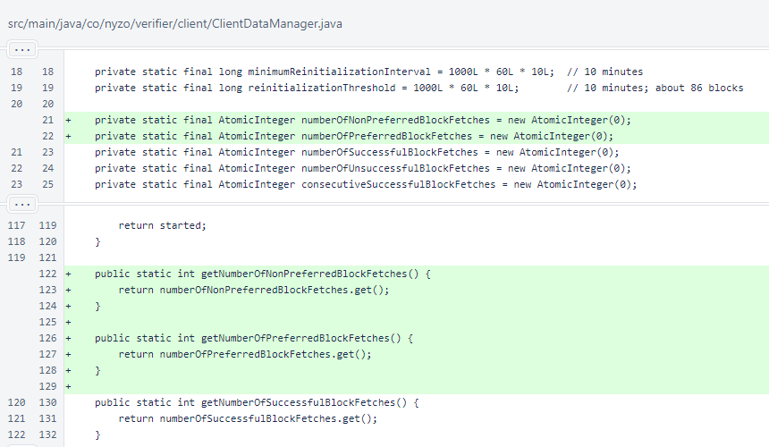In ClientDataManager.requestBlockWithVotes(), a preferred node is now requested when the number of consecutive failures is odd. The appropriate counter is incremented in both cases.
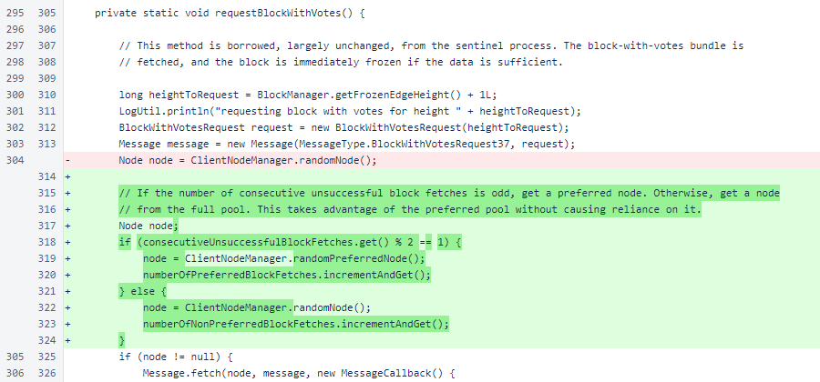Success and failure is marked for each response. This is used by the ClientNodeManager for performance scoring.
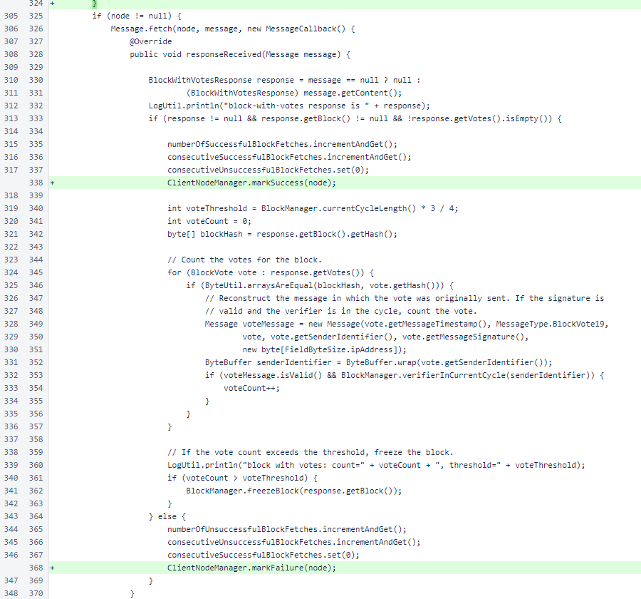In ClientNodeManager, constants were added to bound the scoring system. A maximumMapSize was added to protect memory, and the nodes map was replaced with two maps to allow node scores to be tracked. Lists were added for efficient pseudorandom lookup of nodes in the preferred and general node pools, and a BiFunction was added for thread-safe tallying of scores.
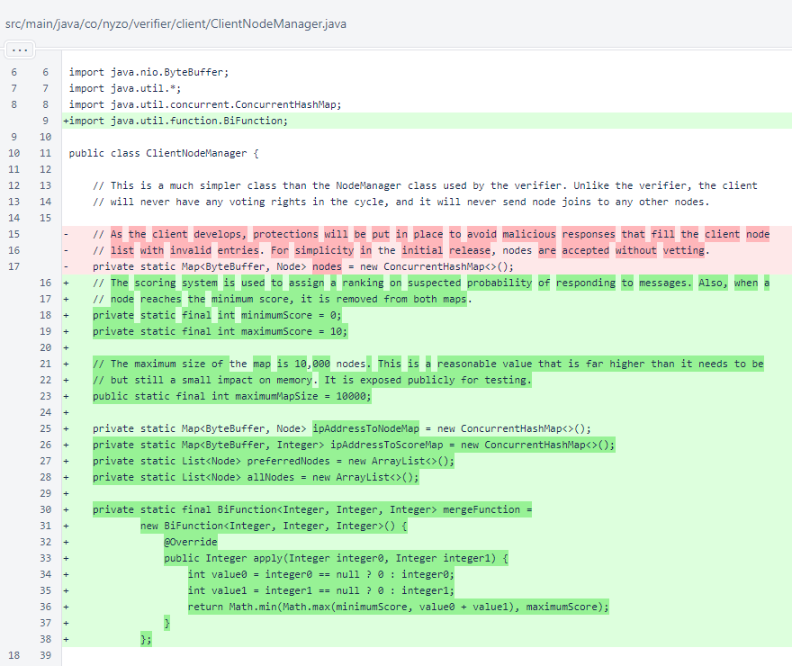Each time a Node is present in a MeshResponse, its score increases by 1. After the mesh response is processed, nodes are removed to ensure the maps do not exceed the maximum allowable size and to ensure that no nodes with scores of 0 remain.
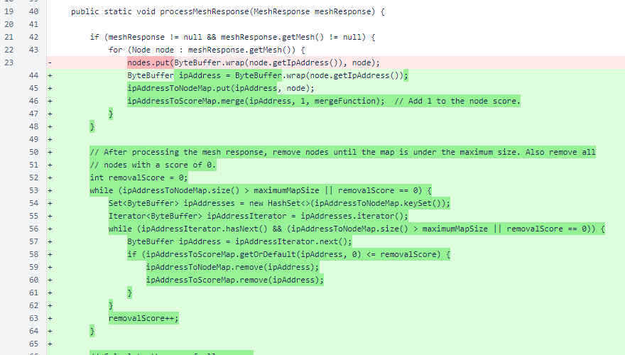The last section of the ClientNodeManager.processMeshResponse() method rebuilds the lists that are used to provide nodes to clients of the class through the randomNode() and randomPreferredNode() methods. The calculation for determining preferred nodes is explained in the comment.
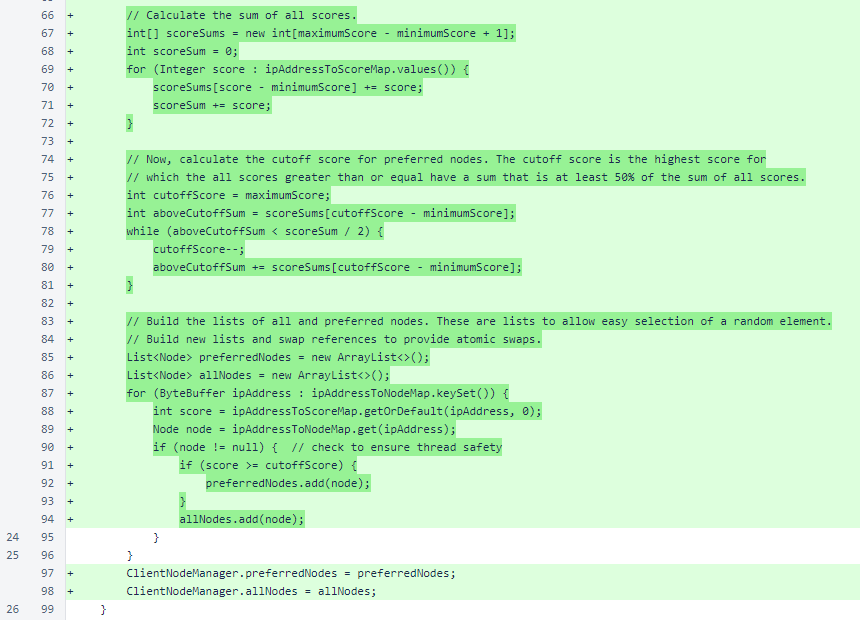The method for providing a randomNode() is simpler due to the new allNodes list. The randomElement() method is no longer necessary. A new method provides a randomPreferredNode(). The getMesh() method references one of the new maps, and the getNumberOfNodes() method references the new allNodes list. The getNumberOfPreferredNodes() method provides additional information to the ClientHealthCommand.
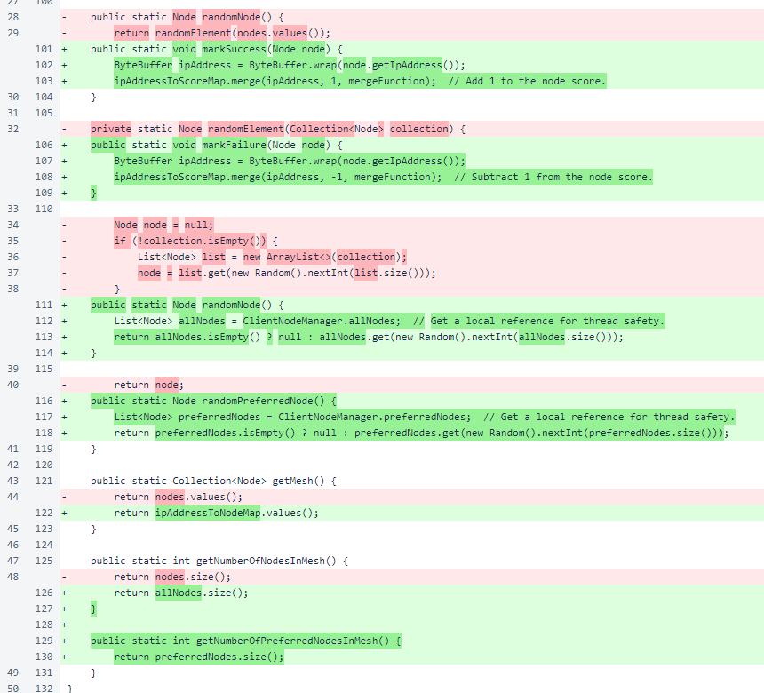The client-health command displays the following new information:
The rest of the commit is testing code. This is a typical NyzoTest, and it includes a main() method to allow it to be run independently of the other tests. The batchSize and numberOfBatches are constants for which many different values allow the test to complete successfully. There are also many values that can be assigned to these constants for which the test will not complete successfully. This is due to limitations of the test, not limitations of the ClientNodeManager.
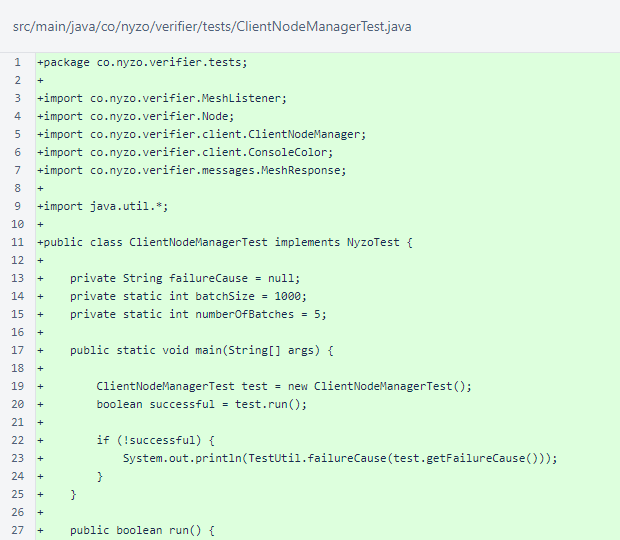The ClientNodeManagerTest.run() method implements the test logic. Nodes are added to the ClientNodeManager. The same nodes are then added again, which increases their scores. Successes are marked, and failures are marked. The number of nodes and number of preferred nodes are checked after each operation.
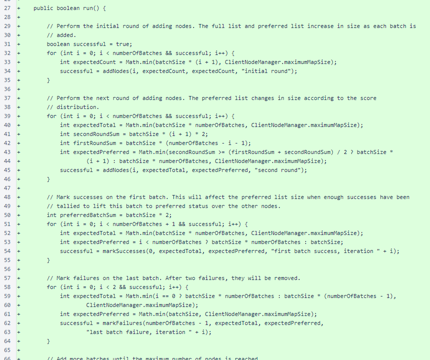Lastly, the map size limit is tested.
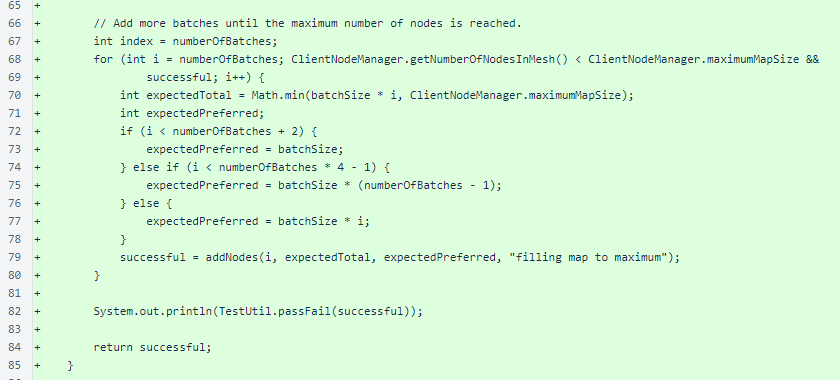The ClientNodeManagerTest.addNodes() method creates simple Node objects for testing, and it performs the full and preferred size checks.

The ClientNodeManagerTest.markSuccesses() method simulates successful block fetches and performs size checks.
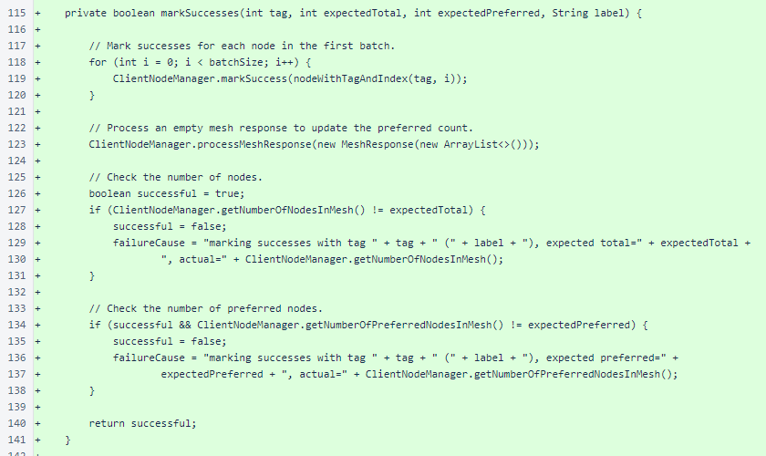The ClientNodeManagerTest.markFailures() method simulates unsuccessful block fetches and performs size checks.
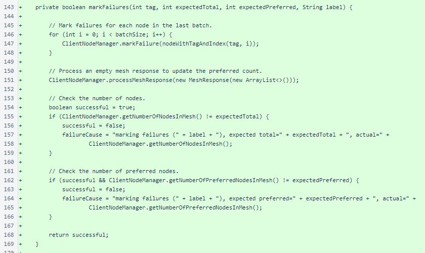The ClientNodeManagerTest.nodeWithTagAndIndex() method produces simple nodes for testing. The ClientNodeManagerTest.getFailureCause() method provides a description of any failure that the test encounters.

The TestUtil suite now includes the ClientNodeManagerTest.
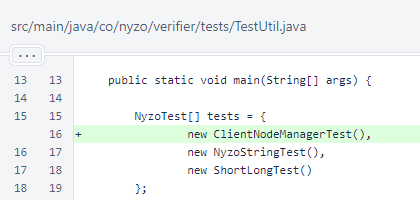